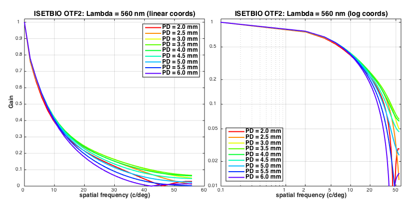
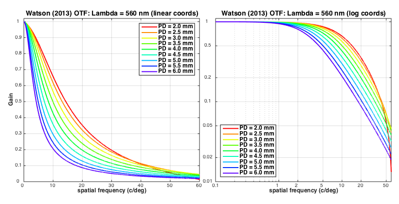
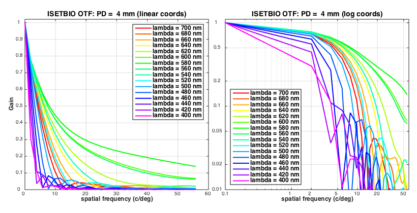
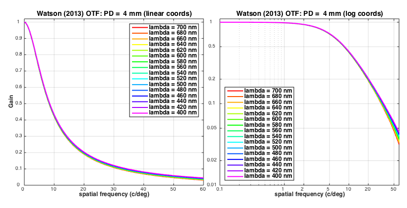

Contents
- Function implementing the isetbio validation code
- Initialize ISETBIO
- Set run parameters
- Iterate over examined pupil sizes
- Retrieve examined pupil radius
- Create human optics with examined pupil radius
- Initialize optical image with desired optics
- Compute optical image for given scene
- Set the scene's angular size = 1 deg and it's distance to the lens = 1.0 meter
- Compute optical image
- Retrieve the full OTF
- Retrieve the wavelength axis
- Retrieve the spatial frequency support in cycles/micron
- Convert spatial frequency to cycles/deg.
- Get 2D OTF slice at target wavelength
- Unwrap spectrum
- Get a 1D slice (sfY=0, sfX)
- Generate modelOTF using Watson's (2013) model
- Internal validation
- Plotting
- Plot of ISETBIO vs. Watson's OTF for different pupil sizes at OTFsliceWavelength
- ISETBIO's OTF slices at the examined pupil sizes
- Watson's OTF slices at the examined pupil sizes
- ISETBIO's OTF slices at different wavelengths and a 4 mm pupil
- Watson's OTF slices at different wavelengths and a 4mm pupil
- Watson's model
- Helper plotting funtions
function varargout = v_OTFandPupilSize(varargin) % % Validate the ISETBIO's OTF as a function of pupil size by comparing it to the Watson (2013) OTF model. % "A formula for the mean human optical modulation transfer function as a function of pupil size". % http://www.journalofvision.org/content/13/6/18.short?related-urls=yes&legid=jov;13/6/18) % varargout = UnitTest.runValidationRun(@ValidationFunction, nargout, varargin); end
Function implementing the isetbio validation code
Contrasting isetbio's OTF to Watson's (2013) model.
function ValidationFunction(runTimeParams)
Initialize ISETBIO
s_initISET;
Set run parameters
% Pupil diameters to test examinedPupilDiametersInMillimeters = (2:0.5:6.0); % Wavelength at which to slice the OTF testWaveLength = 560; % Spatial frequencies at which to evaluate the Watson (2013) model OTF modelOTFsfX = 0:0.05:100;
Iterate over examined pupil sizes
for pupilSizeIndex = 1:numel(examinedPupilDiametersInMillimeters)
Retrieve examined pupil radius
pupilDiameterInMillimeters = examinedPupilDiametersInMillimeters(pupilSizeIndex);
pupilRadiusInMeters = pupilDiameterInMillimeters/2.0/1000.0;
Create human optics with examined pupil radius
optics = opticsCreate('human', pupilRadiusInMeters);
Initialize optical image with desired optics
oi = oiCreate('human'); oi = oiSet(oi, 'optics', optics);
Compute optical image for given scene
scene = sceneCreate('line d65');
Set the scene's angular size = 1 deg and it's distance to the lens = 1.0 meter
sceneAngularSizeInDeg = 2.0;
sceneDistanceInMeters = 1.0;
scene = sceneSet(scene,'wangular', sceneAngularSizeInDeg);
scene = sceneSet(scene,'distance', sceneDistanceInMeters);
Compute optical image
oi = oiCompute(scene,oi);
Retrieve the full OTF
optics = oiGet(oi, 'optics'); OTF3D(pupilSizeIndex,:,:,:) = abs(opticsGet(optics,'otf data'));
Retrieve the wavelength axis
OTFwavelengths = opticsGet(optics,'otf wave');
Retrieve the spatial frequency support in cycles/micron
OTFsupport = opticsGet(optics,'otf support', 'um'); otf_sfXInCyclesPerMicron = OTFsupport{1}; otf_sfYInCyclesPerMicron = OTFsupport{2};
Convert spatial frequency to cycles/deg.
In human retina, 1 deg of visual angle is about 288 microns
micronsPerDegee = 288;
otf_sfX = otf_sfXInCyclesPerMicron * micronsPerDegee;
otf_sfY = otf_sfYInCyclesPerMicron * micronsPerDegee;
Get 2D OTF slice at target wavelength
[~,waveIndex] = min(abs(OTFwavelengths - testWaveLength));
testWaveLength = OTFwavelengths(waveIndex);
Unwrap spectrum
OTF2D = fftshift(squeeze(OTF3D(pupilSizeIndex,:,:,waveIndex)));
Get a 1D slice (sfY=0, sfX)
OTFsliceSFY = 0.0;
[~, sfIndex] = min(abs(otf_sfY - OTFsliceSFY));
OTFslices{pupilSizeIndex}.isetbio = squeeze(OTF2D(sfIndex,:));
Generate modelOTF using Watson's (2013) model
OTFslices{pupilSizeIndex}.model = WatsonOTFmodel(pupilDiameterInMillimeters, testWaveLength, modelOTFsfX);
end
Internal validation
UnitTest.validationRecord('PASSED', 'All OK');
Plotting
if (runTimeParams.generatePlots)
Plot of ISETBIO vs. Watson's OTF for different pupil sizes at OTFsliceWavelength
logPlotScaling = false;
plotISETBIOandModelOTFslices(otf_sfX, modelOTFsfX, OTFslices, examinedPupilDiametersInMillimeters, testWaveLength, logPlotScaling);

ISETBIO's OTF slices at the examined pupil sizes
visualizeISETBIO1(otf_sfX, otf_sfY, OTFwavelengths, OTF3D, ...
testWaveLength, examinedPupilDiametersInMillimeters);
 Watson's OTF slices at the examined pupil sizes
visualizeWatson1(testWaveLength, examinedPupilDiametersInMillimeters);
ISETBIO's OTF slices at different wavelengths and a 4 mm pupil
examinedWavelengths = 700:-20:400;
testPupilDiameterInMillimeter = 4.0;
visualizeISETBIO2(otf_sfX, otf_sfY, OTFwavelengths, OTF3D, ...
examinedPupilDiametersInMillimeters, ...
examinedWavelengths, testPupilDiameterInMillimeter);
 Watson's OTF slices at different wavelengths and a 4mm pupil
visualizeWatson2(examinedWavelengths, testPupilDiameterInMillimeter);
end
end
Watson's model
Method to compute Watson's OTF model as a function of pupil diameter, and wavelength for a range of spatial frequencies.
function modelOTF = WatsonOTFmodel(d, lambda, u) % d: pupil diameter in mm % lambda: wavelength in nm % u: spatial frequency in cycles/deg u1 = 21.95 - 5.512*d + 0.3922 * d^2; % [Equation (4)] D = DiffractionLimitedMTF(u,d, lambda); modelOTF = ((1 + (u/u1).^2).^(-0.62)) .* sqrt(D); % [Equation (5)] function D = DiffractionLimitedMTF(u,d,lambda) u0 = IncoherentCutoffFrequency(d,lambda); u_hat = u / u0; % [Equation (2)] D = u * 0; indices = find(u_hat < 1.0); u_hat = u_hat(indices); D(indices) = (2/pi)*(acos(u_hat) - u_hat.*sqrt(1-u_hat.^2)); % [Equation (1)] function u0 = IncoherentCutoffFrequency(d,lambda) % units of u0 is cycles/deg u0 = (d * pi * 10^6)/(lambda*180); % [Equation (3)] end end end
Helper plotting funtions
function plotISETBIOandModelOTFslices(otf_sfX, modelOTFsfX, OTFslices, examinedPupilDiametersInMillimeters, examinedWaveLength, logPlotScaling) plotWidth = 0.29; plotHeight = 0.30; margin = 0.026; h = figure(1); set(h, 'Position', [100 100 820 740]); clf; for pupilSizeIndex = 1:numel(examinedPupilDiametersInMillimeters) subplotRow = floor((pupilSizeIndex-1)/3)+1; subplotCol = mod(pupilSizeIndex-1,3)+1; subplot('Position', [0.06+(subplotCol-1)*(plotWidth+margin) 1+margin/2-subplotRow*(plotHeight+margin) plotWidth plotHeight]); if logPlotScaling OTFsfX = OTFsfX+0.1; modelOTFsfX = modelOTFsfX + 0.1; end % Plot the 1D OTF slices indices = find(otf_sfX >= 0); plot(otf_sfX(indices), OTFslices{pupilSizeIndex}.isetbio(indices), 'ks-', 'MarkerSize', 6, 'MarkerFaceColor', [0.85 0.85 0.85]); hold on; plot(modelOTFsfX, OTFslices{pupilSizeIndex}.model, 'r-', 'LineWidth', 2.0); hold off; set(gca, 'FontName', 'Helvetica', 'FontSize', 10); textString = sprintf('PD = %2.1f mm\nlambda = %2.0f nm', examinedPupilDiametersInMillimeters(pupilSizeIndex), examinedWaveLength); if logPlotScaling set(gca, 'XLim', [0.1 60], 'YLim', [0.001 1]); set(gca, 'XScale', 'log', 'YScale', 'log', 'XTick', [0.1 1 2 5 10 20 50 100], 'YTick', [0.001 0.002 0.005 0.01 0.02 0.05 0.10 0.20 0.50 1.0]); set(gca, 'XTickLabel', [0.1 1 2 5 10 20 50 100], 'YTickLabel', [0.001 0.002 0.005 0.01 0.02 0.05 0.10 0.20 0.50 1.0]); text(0.14, 0.006, textString, 'FontSize', 12, 'FontWeight', 'bold', 'BackgroundColor',[.89 .99 .78], 'EdgeColor', [0 0 0]); else set(gca, 'XLim', [0.0 60], 'YLim', [0.0 1]); set(gca, 'XScale', 'linear', 'YScale', 'linear', 'XTick', [0:10:100], 'YTick', [0.0:0.1:1.0]); set(gca, 'XTickLabel', [0:10:100], 'YTickLabel', [0.0:0.1:1.0]); text(32.5, 0.75, textString, 'FontSize', 12, 'FontWeight', 'bold', 'BackgroundColor',[.89 .99 .78], 'EdgeColor', [0 0 0]); end if (subplotRow == 3) xlabel('spatial frequency (c/deg)', 'FontName', 'Helvetica', 'FontSize', 12, 'FontWeight', 'bold'); else xlabel(''); end if (subplotCol == 1) ylabel('gain', 'FontName', 'Helvetica', 'FontSize', 12, 'FontWeight', 'bold'); else ylabel(''); set(gca, 'YTickLabel', []); end if logPlotScaling lgndHandle = legend({'ISETBIO', 'Watson (2013)'}, 'Location', 'SouthWest'); else lgndHandle = legend({'ISETBIO', 'Watson (2013)'}, 'Location', 'NorthEast'); end set(lgndHandle, 'Color',[.99 .99 .88], 'EdgeColor', [0 0 0], 'FontName', 'Helvetica', 'FontSize', 12, 'FontWeight', 'bold'); box on; grid on; end end function visualizeISETBIO1(otf_sfX, otf_sfY, OTFwavelengths, OTF3D, ... testWaveLength, examinedPupilDiametersInMillimeters) legendEntries = {}; OTFslices = []; [~,waveIndex] = min(abs(OTFwavelengths - testWaveLength)); for index = 1:numel(examinedPupilDiametersInMillimeters) OTF2D = fftshift(squeeze(OTF3D(index,:,:,waveIndex))); % Get a 2D slice through origin OTFsliceSFY = 0.0; [~, sfIndex] = min(abs(otf_sfY - OTFsliceSFY)); OTFslices(index,:) = squeeze(OTF2D(sfIndex,:)); legendEntries{index} = sprintf('PD = %2.1f mm', examinedPupilDiametersInMillimeters(index)); end figNum = 2; textLabel = sprintf('ISETBIO OTF2: Lambda = %2.0f nm', OTFwavelengths(waveIndex)); plotOTFslices(figNum, textLabel, legendEntries,otf_sfX, OTFslices); end function visualizeWatson1(testWaveLength, examinedPupilDiametersInMillimeters) modelOTFsfX = 0:0.01:120; legendEntries = {}; modelOTFslices = []; for index = 1:numel(examinedPupilDiametersInMillimeters) modelOTFslices(index,:) = WatsonOTFmodel(examinedPupilDiametersInMillimeters(index), testWaveLength, modelOTFsfX); legendEntries{index} = sprintf('PD = %2.1f mm', examinedPupilDiametersInMillimeters(index)); end figNum = 3; textLabel = sprintf('Watson (2013) OTF: Lambda = %2.0f nm', testWaveLength); plotOTFslices(figNum, textLabel, legendEntries, modelOTFsfX, modelOTFslices); end function visualizeISETBIO2(otf_sfX, otf_sfY, OTFwavelengths, OTF3D, ... examinedPupilDiametersInMillimeters, examinedWavelengths, testPupilDiameterInMillimeter) legendEntries = {}; OTFslices = []; [~,pupilSizeIndex] = min(abs(examinedPupilDiametersInMillimeters-testPupilDiameterInMillimeter)); for index = 1:numel(examinedWavelengths) [~,waveIndex] = min(abs(OTFwavelengths - examinedWavelengths(index))); OTF2D = fftshift(squeeze(OTF3D(pupilSizeIndex,:,:,waveIndex))); % Get a 2D slice through origin OTFsliceSFY = 0.0; [~, sfIndex] = min(abs(otf_sfY - OTFsliceSFY)); OTFslices(index,:) = squeeze(OTF2D(sfIndex,:)); legendEntries{index} = sprintf('lambda = %2.0f nm', OTFwavelengths(waveIndex)); end figNum = 4; textLabel = sprintf('ISETBIO OTF: PD = %2.0f mm', testPupilDiameterInMillimeter); plotOTFslices(figNum, textLabel, legendEntries, otf_sfX, OTFslices); end function visualizeWatson2(examinedWavelengths, testPupilDiameterInMillimeter) modelOTFsfX = 0:0.01:120; legendEntries = {}; modelOTFslices = []; for index = 1:numel(examinedWavelengths) modelOTFslices(index,:) = WatsonOTFmodel(testPupilDiameterInMillimeter, examinedWavelengths(index), modelOTFsfX); legendEntries{index} = sprintf('lambda = %2.0f nm', examinedWavelengths(index)); end figNum = 5; textLabel = sprintf('Watson (2013) OTF: PD = %2.0f mm', testPupilDiameterInMillimeter); plotOTFslices(figNum, textLabel, legendEntries, modelOTFsfX, modelOTFslices); end function plotOTFslices(figNum, textString, legendText, OTFsfX, OTFslices) h = figure(figNum); set(h, 'Position', [100 100 820 420]); clf; % Use HSV color-coding colors = hsv(size(OTFslices,1)+2); subplot('Position', [0.06 0.11 0.44 0.80]); hold on for index = 1:size(OTFslices,1) plot(OTFsfX, OTFslices(index,:), 'k-', 'Color', squeeze(colors(index,:)), 'LineWidth', 2); end hold off; lgndHandle = legend(legendText); set(lgndHandle, 'Color',[.99 .99 .88], 'EdgeColor', [0 0 0], 'FontName', 'Helvetica', 'FontSize', 12, 'FontWeight', 'bold'); set(gca, 'XLim', [0 60], 'YLim', [0 1.02]); set(gca, 'XScale', 'linear', 'YScale', 'linear', 'XTick', [0:10:120], 'YTick', [0:0.1:1.0]); set(gca, 'XTickLabel', [0:10:120], 'YTickLabel', [0:0.1:1.0]); set(gca, 'FontName', 'Helvetica', 'FontSize', 10); xlabel('spatial frequency (c/deg)', 'FontName', 'Helvetica', 'FontSize', 12, 'FontWeight', 'bold'); ylabel('Gain', 'FontName', 'Helvetica', 'FontSize', 12, 'FontWeight', 'bold'); box on; grid on; title(sprintf('%s (linear coords)',textString), 'FontName', 'Helvetica', 'FontSize', 14, 'FontWeight', 'bold'); % Now in log-coords subplot('Position', [0.54 0.11 0.44 0.80]); hold on OTFsfX = OTFsfX+0.1; for index = 1:size(OTFslices,1) plot(OTFsfX, OTFslices(index,:), 'k-', 'Color', squeeze(colors(index,:)), 'LineWidth', 2); end hold off; lgndHandle = legend(legendText, 'Location', 'SouthWest'); set(lgndHandle, 'Color',[.99 .99 .88], 'EdgeColor', [0 0 0], 'FontName', 'Helvetica', 'FontSize', 12, 'FontWeight', 'bold'); set(gca, 'XLim', [0.1 60], 'YLim', [0.01 1.1]); set(gca, 'XScale', 'log', 'YScale', 'log', 'XTick', [0.1 1 2 5 10 20 50 100], 'YTick', [0.001 0.002 0.005 0.01 0.02 0.05 0.10 0.20 0.50 1.0]); set(gca, 'XTickLabel', [0.1 1 2 5 10 20 50 100], 'YTickLabel', [0.001 0.002 0.005 0.01 0.02 0.05 0.10 0.20 0.50 1.0]); set(gca, 'FontName', 'Helvetica', 'FontSize', 10); xlabel('spatial frequency (c/deg)', 'FontName', 'Helvetica', 'FontSize', 12, 'FontWeight', 'bold'); box on; grid on; title(sprintf('%s (log coords)',textString), 'FontName', 'Helvetica', 'FontSize', 14, 'FontWeight', 'bold'); drawnow; end